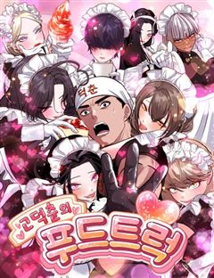
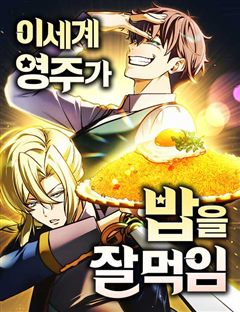
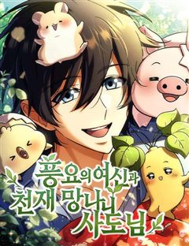
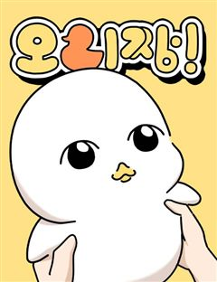
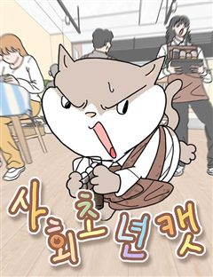
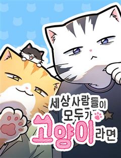
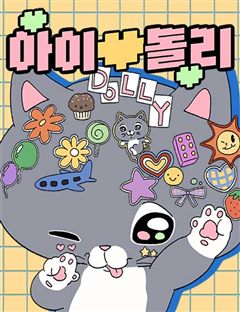
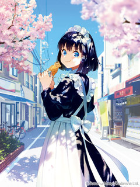
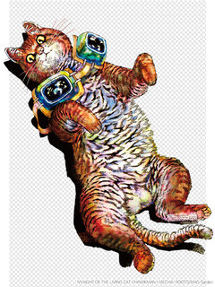

일상·개그 요리·육아·동물 웹툰 추천 TOP 27
일상·개그 작품 중에서 음식&요리, 이세계요리, 육아물, 동물 같은 요소가 들어간 작품만 골랐어요. 네이버웹툰·카카오웹툰·레진코믹스에서 조건에 맞는 작품 27개 중 인기 순으로 27개를 골랐어요. 인기 TOP 3: 오무라이스 잼잼, 풍작이에요, 마왕님!, 어린이집 다니는 구나
2026-10-04 기준 · 성인 작품 제외
내 취향으로 더 좁혀서 추천받기 →-
1
 카카오웹툰
카카오웹툰오무라이스 잼잼
'음식'과 '가족'의 이야기를 담은 에세이 만화. 몇 개라도 먹을 수 있을 것 같은 '메추리알 조림', 빙글빙글 돌아가는 '회전초밥', 지구 반 바퀴 돌아 포르투갈에서 맛본 '에그타르트', 매콤상콤하게 볶아 입맛 도는 '마라샹궈', 짭짤한 밥도둑 '간장게장' 등 우리가 사랑하는 모든…
일상·개그음식&요리공감카카오웹툰에서 보기 → -
2
 네이버웹툰
네이버웹툰풍작이에요, 마왕님!
게임 속 최종보스 마왕이 되었다. 그런데... 이대로 인간계를 침공하면? 내가 키운 만렙 주인공에게 사망. 그렇다고 침공을 중단하면? 굶주린 수하 마족 사천왕에게 사망. ...그러므로, 답은 농사다.
일상·개그농사판타지개그세계관게임판타지네이버웹툰에서 보기 → -
3
 네이버웹툰
네이버웹툰어린이집 다니는 구나
"노는 게 제일 좋아!" 라고 했더니 정말 노는 게 직업이 됐다?! 매일 동심의 세계로 출퇴근한지 어쩌다 10년째! 아이들이라면 알 만큼 안다고 생각했는데... 예측불가한 말과 행동들은 여전히 새롭기만 하다. 그런 아이들에게 언제나 "그랬구나" 라고 말해주는, 10년차 프로공감러 구나…
일상·개그육아물컷툰공감무해한네이버웹툰에서 보기 → -
4
 네이버웹툰
네이버웹툰짜장 한 그릇에 제갈세가 데릴사위
짜장면 한 그릇으로 전 무림을 평정할 수 있을 것 같다? 최고의 중식 요리사를 꿈꿨지만 중국 송나라 시대로 보내져버린 주인공! 하지만 깨어난 몸에 무공은 전혀 없고, 남은 거라곤 전생에서 익힌 요리 기술들뿐. 그런데 이 요리들... 반응이 매우 좋다! 이번 생에는 과연 짜장면으로 중원…
일상·개그음식&요리하렘환생병맛네이버웹툰에서 보기 → -
5

네이버웹툰고덕춘의 푸드트럭
돌아가신 덕춘 삼촌의 푸드트럭을 물려받은 준호. ‘고덕춘’의 이름을 전국에 알리기 위해 여행하며 요리한다. 재벌 2세 세희를 시작으로, 각 지역의 사연 있는 여자들과 얽히게 되는 준호! 모두 그에게 마음을 빼앗기지만, 정작 준호의 마음을 빼앗은 건 요리뿐! 마성의 남자 준호가 펼치는…
일상·개그음식&요리하렘열혈병맛개그열혈네이버웹툰에서 보기 → -
6
 네이버웹툰
네이버웹툰안녕 오목눈이 그리핀!
이사한 집에 정체 모를 ‘오목눈이 그리핀’이 나타났다! 앞발은 푹신한 새의 다리, 뒷발은 고양이의 젤리가? 어디로 튈지 모르는 오목눈이 그리핀과 초보 집사 ‘한솔’의 좌충우돌 동거 라이프. 과연 무사할 수 있을까?
일상·개그동물일상개그힐링공감판타지네이버웹툰에서 보기 → -
7
 네이버웹툰
네이버웹툰청춘정식
매일 맛있는 끼니를 제공해야'만' 하는 게스트하우스. 그곳을 갑작스럽게 혼자 운영해야 하는 대학생 하리. 그러나 하리가 유일하게 못하는 건 요리?! 주방 직원 지원자는 0..; 난감하던 찰나에 수상한 지원자가 왔다! <헤어지면 죽음> 봄소희 X KYMA 작가의 로코 신작!
일상·개그음식&요리러브코미디일상개그힐링리얼로맨스네이버웹툰에서 보기 → -
8
 네이버웹툰
네이버웹툰냥냥찍찍!
햄스터로 변하는 여자 금해미, 고양이로 변하는 남자 고우영. 저주를 풀기 위해선 스킨십을 해야 한다?! 고양이와 햄스터의 아찔한 코믹 풀충전 캠퍼스 로맨스!
일상·개그동물컷툰러브코미디일상개그힐링네이버웹툰에서 보기 → -
9
 네이버웹툰
네이버웹툰호붕빵 아저씨
귀여운 디저트를 판매하고 싶은 꿈을 가진 호랑이, 맹호석. 한때는 무서운 조직의 일원이었지만, 손을 씻고 시작한 건… 다름 아닌 붕어빵 장사! 하지만 새 삶도 결코 순탄하지 않은데… 선입견과 편견이 가득한 시선 속에서, 호석은 과연 동네 주민들과 잘 어울리고, 디저트 판매의 꿈을 이룰…
일상·개그음식&요리동물일상개그힐링감성적인네이버웹툰에서 보기 → -
10

-
11

네이버웹툰이세계 영주가 밥을 잘 먹임
작은 어촌 마을 에버그린에서 시작된 혁명. 전생 영양사가 이세계를 맛있게, 뚝딱 정복합니다! “어서오세요, 에버그린에!”
일상·개그음식&요리판타지개그서양성장물네이버웹툰에서 보기 → -
12
 네이버웹툰
네이버웹툰성북구 비둘기 이헌서
하루 아침에 비둘기가 되어버린 대학생 '이헌서'(여/24) 다시 인간으로 돌아갈 방법을 찾지 못한 헌서는 당분간 같은 동네 남사친 '반휘혈'의 집에 머물며 비둘기 생활을 이어나가게 되는데... 어떤가요 이헌서양, 비둘기 생활 재미있나요?
일상·개그동물판타지개그공감캠퍼스네이버웹툰에서 보기 → -
13

네이버웹툰풍요의 여신과 천재 망나니 사도님
0.0000001%를 뚫고 [풍요의 신]을 섬기는 사도가 됐다. 농업 관련 신이 분명한데...기본 스킬이 참수다. 목을 베면 농사가 딸깍. 농작물 가공도 딸깍. -참 좋은데 뭐라고 설명할 방법이 없는 건강기능식품 팝니다.
일상·개그동물액션판타지판타지개그상태창네이버웹툰에서 보기 → -
14
 네이버웹툰
네이버웹툰소심한 호랭이 코코
"내는 소심한 호랭이 코코. 내랑 친구해줘유.." 처음으로 유치원에 가게 된 코코. 소심한 코코에게 유치원은 벅찬 시련들이 가득한데... 워떡혀! 짝꿍아 도와줘유..~ 우리들의 어린 시절이 떠오르는, 호랭이 코코의 무해한 유치원 적응기!
일상·개그동물감성적인가족가벼운네이버웹툰에서 보기 → -
15
 네이버웹툰
네이버웹툰색시한 내 우렁이
퇴근 후 집에 왔더니 따뜻한 저녁이 차려져 있다. 잠깐... 나 혼자 사는데? 누군가 몰래 우리 집에 들어와 밥해주고 청소해 주고 빨래해주는 이 상황.... 너무 편해서 익숙해져 버렸어!!
일상·개그동물집착녀아방녀얼빠녀네이버웹툰에서 보기 → -
16
 네이버웹툰
네이버웹툰개집사
출근도 퇴근도 없는 똑같은 일상의 작가…눈치채지 못한 사이 작가의 삶에 다이나믹한 소재를 주는 두 존재가 있었는데…! 작지만 자존감 만큼은 하늘 같은 말티즈, 덩칫값못하는 진도 믹스 아가씨들을 모시는 집사&작가의 삶
일상·개그동물컷툰일상개그힐링공감네이버웹툰에서 보기 → -
17
 네이버웹툰
네이버웹툰마님이네 미국 시골집 이야기
마님♡올리버쌤♡체리 가족이 찾아왔습니다! 미국 남자 올리버와 토종 한국인 마님, 그리고 사랑스러운 딸 체리와 다섯 마리 반려 동물까지. 하루종일 육아하고 털 청소하느라 바쁘지만, 그래도 하하 호호 행복한 미국 시골집 이야기.
일상·개그육아물컷툰공감결혼생활네이버웹툰에서 보기 → -
18

네이버웹툰오리짱!
길에서 지갑을 떨어트린 지우를 쫓아온 정체불명의 오리. 지우는 오리를 집에 들이게 되고, 새로운 집에 입성하게 된 오리는 빠르게 그들의 삶에 물들어간다. 그리고 벌어지는.. 오리방정 하루들!
일상·개그동물일상개그힐링가족일상네이버웹툰에서 보기 → -
19
 네이버웹툰
네이버웹툰초등생활 그림일기
어느덧 유치원 생활의 작은 모험에서 벗어나 초등학교의 문턱을 넘은 나의 자식! 초등생활 그림일기라 쓰고 부모생활 그림일기라 읽는다~! 좌충우돌, 천방지축, 찌그락빠그락, 우당탕탕! 이제부터 세 가족의 진정하고도 새로운 전쟁이 시작된다.
일상·개그육아물컷툰공감감성네이버웹툰에서 보기 → -
20
 네이버웹툰
네이버웹툰드블리와 힐링합니다.
평범한 직장인 시현의 몸으로 전생한 드루이드 테오필로. 과로로 사망한 시현의 몸을 위해 요양차 내려온 시골 마을에서 드루이드의 힘으로 힐링 라이프를 시작한다.
일상·개그농사현대판타지일상판타지네이버웹툰에서 보기 → -
21네이버웹툰
꽤애액
썸타는 두 남녀 영수와 고란. 그러나 고란의 정체를 알게 된 영수는 큰 혼란에 빠진다. 둘의 사랑은 이뤄질 수 있을 것인가?
일상·개그동물2025 지상최대공모전일상개그힐링개그네이버웹툰에서 보기 → -
22

-
23

네이버웹툰세상 사람들이 모두가 고양이라면
세상 사람들이 전부 고양이로 보인다!? 사람이 모두 고양이로 보이는 특별한 능력과 함께 과거로 회귀한 소미. 외모 편견 없이 세상을 다시 살아보려던 그녀 앞에, 특별한 고양이 두 마리... 아니, 두 남자가 나타난다. 고양이와 인간의 삼각관계, 어디까지 가능할까? 모두가 귀여워, 외모…
일상·개그동물러브코미디일상개그힐링햇살녀네이버웹툰에서 보기 → -
24

네이버웹툰아이돌리
동물들의 신분상승 시대, 한 마리 고양이가 무대에 올랐다. 스타로 시작해 디바로 완성되는 고양이 돌리의 성장 이야기.
일상·개그동물2025 연재직행열차일상개그힐링가벼운네이버웹툰에서 보기 → -
25네이버웹툰
중사의 드래곤
이세계. [그린 드래곤, 오크 VS 골드 드래곤, 엘프]의 세력다툼이 한창이던 중, 현대 전장의 전설 ‘이건 중사’가 강력한 마물 테이밍 능력을 가진 오크로 태어나게 된다.
일상·개그이세계요리고자극드라마액션판타지판타지개그네이버웹툰에서 보기 → -
26

레진코믹스메이드 양은 먹기만 할 뿐
메이드 in 재팬을 드셔보세요! 영국 저택에 살던 메이드 스즈메는 어떤 사정으로 인해 일본 일각에 있는 작은 다세대 주택에서 생활하게 된다. 많은 걱정거리도 있지만, 일본 먹거리에 흥미가 많은 스즈메는 질풍처럼 집을 뛰쳐나가는데…! 비일상적인 메이드 양이 선사하는 따스한 일상 만화,…
일상·개그음식&요리일상레진코믹스에서 보기 → -
27

레진코믹스냐이트 오브 더 리빙 캣
세계는 고양이에게 지배당했다. 인간을 고양이로 바꾸는 바이러스로 인해 전 세계에 냥데믹이 발생. 인류는 고양이의 부비부비로 인해 하나둘 고양이로 변해가는데···. 고양이를 만지고 싶다, 하지만 만지면 고양이가 된다. 고양이 러버에겐 천국 같은 지옥. 고양이 러버만이 존재하는 세계에서…
일상·개그동물개그레진코믹스에서 보기 →